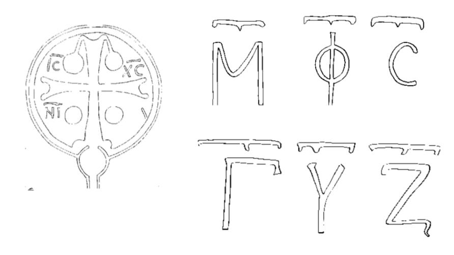

სიმონ კანანელის ტაძრის ბერძნული წარწერა
შინაარსი / Summary
მოსახსენებელი
კრიტიკული გამოცემა Interpretive Edition
Μ Φ C || Γ Υ Ζ ΙC | ΧC || ΝΙ Α Μ(ήτηρ) Φ(ωτὸς) Σωτῆρος Γεώργιος Ὑπέρτιμος Ζικχίας Ἰ(ησοῦ)ς Χ(ριστό)ς νι(κ)ᾷ
დიპლომატიური გამოცემა Diplomatic Edition
ΜΦC||ΓΥΖΙC|ΧC||ΝΙΑ Μ Φ ΣΩΤΗΡΟΣ ΓΕΩΡΓΙΟΣ ΥΠΕΡΤΙΜΟΣ ΖΙΚΧΙΑΣ ΙΣ ΧΣ ΝΙΑ

Cross at the Church of St. Simon the Canaanite
{'ka': 'დედა ნათლისა მაცხოვრისა, გიორგი ყოვლადპატიოსანი (წინამძღვარი) ჯიქეთისა (?)\n იესუ ქრისტე, ძლევაჲ'}
{'default': 'თარგმანის მეორე ვარიანტი - დედაო ნათლისაო, იხსენ გიორგი ყოვლადპატიოსანი (წინამძღვარი) ჯიქეთისა(?). წარმოდგენილი დათარიღების საფუძველია ასოთა მოხაზულობა (Φ, Ζ, C, Μ). ძეგლის არქიტექტურა (Л. Д. Рчеулишвили, Некоторые аспекты грузинской архитектуры\n Черноморского побережья: Русь. Грузия, М. 1978. 26). დათარიღება სხვა გამოცემებში: А. Л. ( 50) და И. Н. ( 114) მას მიიჩნევენ საფლავის ქვის წარწერად,\n შემდეგ, XII ს-ის რესტავრაციის დროს ჩასმულად კედელში. წარწერა ლიტერატურაში კარგად არის ცნობილი. იგი მოყვანილია ი. პომიალოვსკის კრებულში ( 41). პომიალოვსკის მოცემული აქვს დესტუნისის წაკითხვა:\n Μ(ή)τ(ηρ) Φ(ω)τ(ὸς) Σ(ω)τ(ῆρος). იგივე წარწერა მოყვანილი აქვს ლატიშევს ( 3), ამ ასოების მნიშვნელობაზე არაფერს ამბობს. ყველაზე საინტერესო ამოკითხვა აქვს И. Н.-ს\n ( 14) Μ(ήτερ) θ(εοῦ) C(ῶσον) Γ(εοργίον) Υ(περτίμον) Σ(κόμης) = Мать божия! Спаси Георгия пречестного (митрополита) Цхемского (= Сухумского). მას ეს მიაჩნია საფლავზედა\n ქვად, ხოლო ასოებს ზემოთ მოთავსებული τ-ები ქარაგმის ნიშნად. И. Н.-ს ზოგი ფაქტიური შეცდომა აქვს: სინამდვილეში ΙΙ ასო არის Φ (და არა Θ), ხოლო უკანასკნელი - Ζ და არა Σ,\n ამდენად ვერ იქნება θεοῦ და Σκόμης (სოხუმი). გარდა ამისა, ძნელი წარმოსადგენია, რომ ეს იყოს საფლავზედა ქვა შემდეგ ჩასმული ტაძარში. საფლავის ქვაზე წარწერა ასეთი სახის არ\n იქნებოდა: დაწერილობა ქვის სიგრძეზე (და არა სიგანეზე) საფლავის ქვებზე ძველად არ გვხვდება. ეს წარწერა სპეციალურად ამ ტაძრისთვის არის გაკეთებული, ან ტაძრის აშენებამდე,\n ან შემდეგ, ზედვე. თუ დავუშვებთ, რომ И. Н.-ს ამოშიფრვის იდეა სწორია, მაშინ Ζ შეიძლება იყოს Ζικχία - ჯიქეთი. ჯიქეთის 3 ეპარქია იყო ცნობილი (იხ. Georgii Cypri Descriptio\n orbis romani. Lipsiae 1890, 4: № 65, 66, 67: ἐπαρχία Ζικχίας - ὁ Χερσῶνος, ἐπαρχία τῆς αὐτῆς - ὁ Βοσπόρων, ἐπαρχία τῆς αὐτῆς ὁ Νικόψεως). შესაძლებელია ერთ-ერთი\n ამ ეპარქიის (თუნდაც ნიკოფსიის) მიტროპოლიტი არის მართლაც მოხსენებული ამ წარწერაში. მაინც ეს ამოკითხვა ძალიან სათუოა, მით უფრო რომ ჯიქეთის მიტროპოლიტი სხვა წყაროებით\n ცნობილი არ არის. უფრო საფიქრებელია, რომ სიმბოლური მნიშვნელობის წარწერაა წარმოდგენილი.'}
<div type="edition" xml:lang="ka" ana="mtavruli" xml:space="preserve">
<ab>
<lb n="1"/><w lemma="ქრისტე"><expan><abbr>ქ</abbr><ex>რისტ</ex><abbr>ე</abbr></expan></w>
<w lemma="განსუენება"><expan><abbr>გა</abbr><ex>ნ</ex><abbr>ო</abbr><ex>ჳ</ex><abbr>ს</abbr><ex>უ</ex><abbr>ენე</abbr></expan></w>
<w lemma="სულ">სოჳ<lb n="2" break="no"/>ლსა</w>
<name nymRef="ვაჩა">ვაჩაჲს<lb n="3" break="no"/>ასა</name>
<name nymRef="გურა"><expan><abbr>გო</abbr><ex>ჳ</ex><abbr>რაჲ<lb n="4" break="no"/>სასა</abbr></expan></name>
<name nymRef="მირა"><expan><abbr>მ</abbr><ex>ი</ex><abbr>რა</abbr><ex>ჲ</ex><abbr>ს</abbr><ex>ა</ex><abbr>ს</abbr><ex>ა</ex></expan></name>
</ab>
</div>